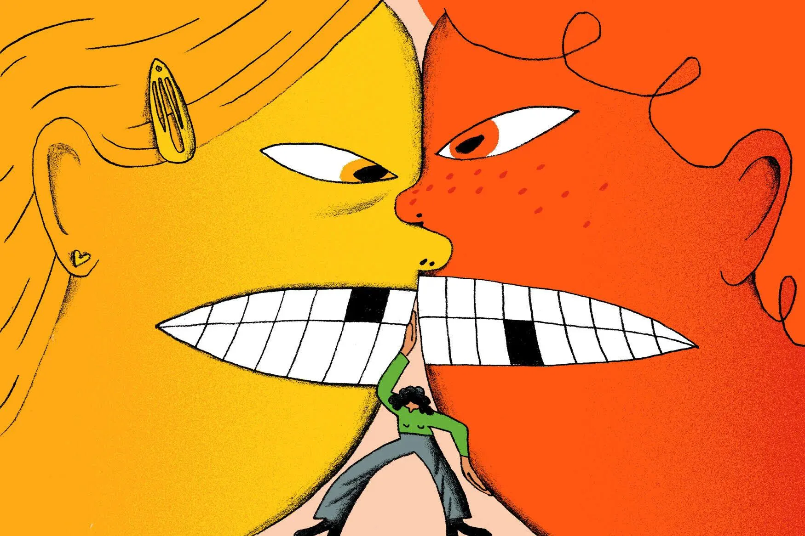

孖仔帮
公众号ID：twinsbang
关注
文|圆圈妈
网图|侵删
1
我一直主张，双胞胎吵架打架时，尽可能让两孩子自己解决，特别是两人发生争执还未到肢体冲突的阶段，家长尤其不要过分好心，强加干预。
因为你一定想不到，原来吵架其实是孩子在从个人走向集体的过程中所需经受的一种锻炼。
而咱们的双胞胎孩子正好有着得天独厚的天然优势。
你想想啊，天天有个伴儿，从早到晚，只要嘴巴痒想耍下嘴皮子，就可以随叫随到，完全不用发愁吵架没对象，也不必像独生子女那样对着空气吵，难道不应该偷着乐吗？
我知道我说这句话，可能会引起个别人的不适，特别是家有老人家帮带娃的，真的见不得两宝贝吵架，生怕他们吵着吵着就打起来，一发现苗头不对就赶紧把两人拉开。
别急，等一等也许会有意外的惊喜！
双胞胎之间吵架，某种程度上是有好处的，可以提高孩子的协作能力，可以增进他们的社交技巧；倘若家长引导得当，还能让手足间的感情在吵吵闹闹中愈加深厚。
当然，我不是鼓励你真的让双胞胎刻意去吵架，而是强烈建议你，在面对孩子们无可避免的矛盾冲突时，记得收好玻璃心，忍住关切之意，只要争吵情况不发展到什么危险事情，尽量让孩子们自己解决。
此时，置身度外就是最明智的选择。
这是给孩子们创造机会，帮助他们从小形成一种精神，即在该坚持自我时坚持自我，该妥协时就妥协。
我之所以经常在公号文章中提到双胞胎之间的交流互动十分重要，哪怕只是单纯地吵架斗嘴，意义就在这里。
2
已经6岁的圆圈兄弟，偶有斗嘴，常有争吵，但纯属怡情一下，来点气氛而已，哪天他们要是不吵嘴了，我倒觉得不习惯了。
他们在幼儿园也和其他小朋友相处的很融洽，自己不会主动发起争执；若别的小朋友迫使自已吵架，他们也能轻松避开。
老师经常表扬道：“圆圈兄弟让老师们很省心，他们好像不用别人教就知道什么时候要妥协，什么时候要坚持，什么时候要请求帮助。”
老母亲则表示有点苦涩，又有点欣慰，这多多少少还得感谢两兄弟从小到大那没完没了的争吵啊！
与所有双胞胎家庭或二孩家庭一样，两兄弟也是从小吵到大，而吵架的原因也是随着年龄的增长不断地升级。
2岁左右时，多是外界因素导致两人吵架，比如为了争抢一个玩具而吵起来，常用吵架术语：【那是我的】，【这是我先拿到的】...
到3岁左右，更多是两孩子自己主动发起的吵架。这大概是因为孩子到了3岁左右已产生自我意识，开始强调自我的缘故吧。
他们时常莫名其妙就会吵起来，上一秒还在各自的角落玩得好好的，下一秒就变脸，甚至互相推搡...
吵完了，问原因，两人都面面相觑地看着对方，然后大笑一声，各自跑开了。
这种状态一直持续到他们5岁，没有消停的意思，反而愈演愈烈，上升到报复性的反驳。
圈圈喜欢耍小聪明，要是抢玩具抢不过圆圆，就发动语言攻击，一个劲地说他，激怒他，挑衅他...圆圆只能淹没在圈圈的唾沫星子中，不得不妥协，把玩具拱手相让，然后灰头土脸地向我告状。
但这丝毫不影响他们哥俩的感情，有时候圆圆受罚了，圈圈就过来帮腔；圈圈受罚了，圆圆就过来求饶，见我不吃这套就干脆两人合伙起来，一唱一合，据理力争，让人根本招架不住！
每当这时，我就心里偷着乐，好家伙，这台词，这术语，怎么如此似曾相识，知道利用起来联手欺负老母亲了！
可能，有些家长会觉得乐不起来。两孩子经常吵架，此起彼伏的吵闹声，只会让人火冒三丈。
是的，以前我也是经常在圆圈哥俩的吵闹声和哭泣声中烦躁不安，变得敏感易怒，总是疲于应付他们的冲突，总想着有什么法子能让他们安静下，不要再吵了。
然而，总是无功而返，因为我忽略了一点就是，吵架是孩子们很擅长的事情，于他们而言，打架跟运动比赛一样有趣好玩。
这种乐趣，纯天然，无公害，还能怡情，为何要禁止呢？
于是，当我终于对双胞胎的吵架不再敏感时，我整个人都轻松多了，亲子关系也缓和了不少。
现在你要是问我双胞胎老吵架怎么办，那我只会回答你：“孩子的事情，孩子自己解决。”
这多少有点无奈的感觉，但貌似这是最好的办法。
3
孩子不会无缘无故地吵架。
如果不分青红皂白，直接告诉孩子吵架是不对的，不允许孩子吵架的话，对于提高孩子的协作能力是没有任何好处的（当然， 如果父母对孩子的吵架大加赞扬，同样也不利于培养孩子的社交能力。）
如果按照大人的逻辑来对孩子的争吵判断对错或者训斥孩子，不允许孩子吵架的话，只会使两孩子性格变得胆小孤僻。
请理解，双胞胎之间的吵架不但很正常，而且，你别看他们好像吵得很激烈，其实，他们乐在其中。
小孩子很聪明的，他们会按照自己的逻辑去强调自我或相互协调合作，这里面没有大人参与的余地。
正如简·尼尔森的《正面管教》所言：当孩子与自己的兄弟姐妹争吵时，他们可以在今后学到如何处理权力斗争，如何处理冲突，如何解决分歧，如何自信地站在自己的立场上，如何谈判和妥协。
所以，请给双胞胎孩子们一个机会，放手让孩子们多去尝试，多去体验，在冲突中学会妥协，忍让，平衡各自关系。
孩子争吵和分歧越多，练习和学习的机会就越多。
渐渐地，你会发现，喜欢吵架的孩子，情商都不会太差。
-END-
今日互动话题
#双胞胎在吵架时，你在干嘛？#
评论区聊一聊呗！
微信公众号：孖仔帮
ID : twinsbang
专注双胞胎孕育，养育，教育经验分享
扫码关注我们
点一下你会更好看耶


